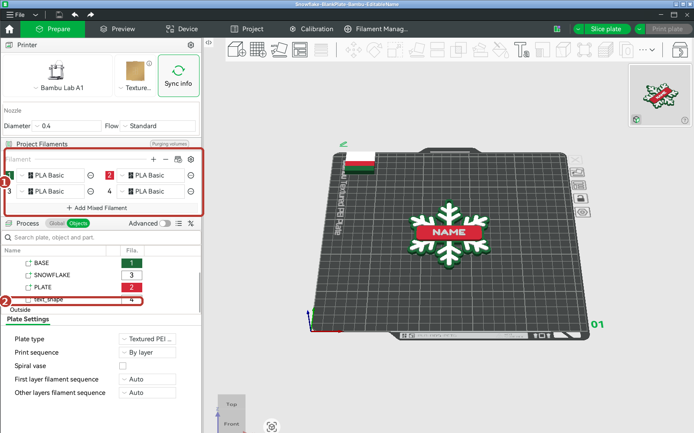
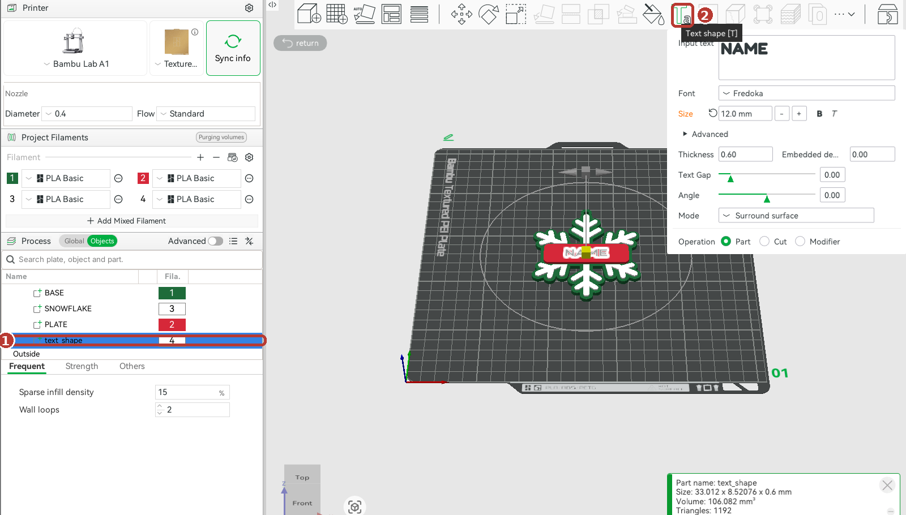
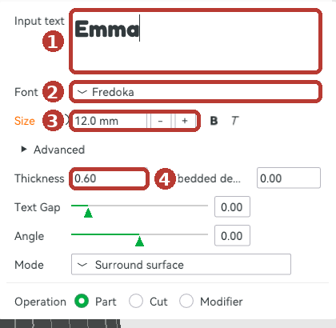

Start here: snowflake and mistletoe ornaments with a blank name plate
What's in your download
Bambu Studio folder
Snowflake and Mistletoe projects: 4 colours set, editable "NAME" ready to retype. Start here.
STL folder
Both ornaments blank, one colour, for any slicer.
Font folder
Fredoka Bold (free, SIL OFL). Install it first.
LICENSE.txt
Your commercial licence (page 2).
Digital download
3D print files only. Nothing is shipped.
Sizes
Snowflake 83.6 × 99.6 mm, plate 66 × 20 mm, 4 mm loop. Mistletoe 82.4 × 82.6 mm, tag 56 × 16 mm, 3.5 mm hole.
Install the font first
Double-click Fredoka-Bold.ttf › Install, before opening Bambu Studio (or restart it). Any other font works too.
Blank Christmas Ornaments · Start Here1
Page 2 · Add the name
Change the name in Bambu Studio
1
File › Open Project… and pick the snowflake or mistletoe file. Four colours load 1. In the Objects list you'll see text_shape2: that's the name.
2
Click text_shape in the list 1, then the TaText shape button at the top 2. Always click text_shape first, or Bambu makes a new, separate text.


3
Type the name in Input text1. Fredoka 2, size 12 mm 3 and thickness 0.6 mm 4 are already set. Long name (9+ letters, or ALL CAPS)? Lower the size to 9–10 mm. Click return when done.

4
Slice plate and print. Use File › Save Project as… for each customer's name.
Other slicers (STL)
OrcaSlicer: right-click the plate › Add Part › Text, height 12 mm, depth 0.6 mm. PrusaSlicer has a similar text tool. One-colour printer? Add a pause at the first layer of the name to swap filament.
Commercial licence
✔ Print and sell unlimited ornaments, online and in person, any names and colours. ✘ Don't share, resell or upload the files, claim the design or use our listing photos. One licence per shop.
Suggested: PLA, 0.20 mm layers, no supports, flat as it opens. Screenshots: Bambu Studio 2.8. Questions? Message us on Etsy. Design rights remain with Valencia Holdings Inc.